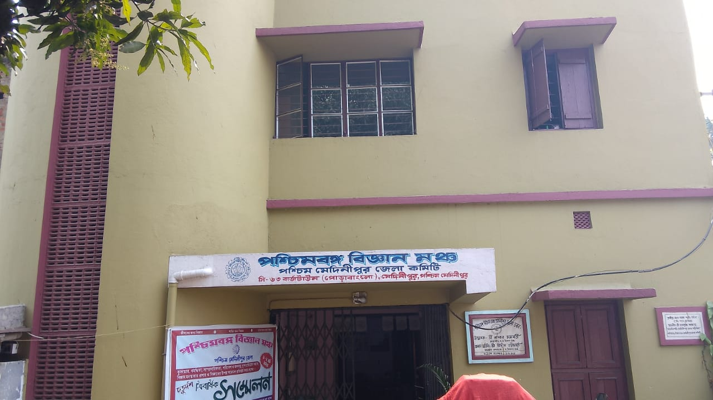

<div class="container-fluid">
  <div class="row">
    <div class="col-md-12">
      <div class="card shadow-sm bg-body-tertiary rounded m-1">
        
        <div class="card-body">
          <div class="fs-4 fw-semibold">About Us</div>
          <p class="card-text">
            <span class="fs-6 fw-semibold">
              Science popularization was not a totally new concept to the people
              of West Bengal in 1986 when Paschim Banga Vigyam Mancha (PBVM)
              started function. The doyens of our renaissance were involved in
              this social reform work even in early nineteenth century. The only
              difference is that PBVM initiated an organized People's Science
              Movement. More than three decade has passed since its inception
              and now no one will deny that PBVM is a name in this field of
              science popularization not in West Bengal but also in India. PBVM
              is the largest people science organization in India with
              membership exceeding 3.42 lakhs. In the twenty two Districts of
              West Bengal, most of the Blocks of the State, in the research
              Institutes and Universities have their respective units/committees
              of Paschim Banga Vigyan Mancha. Millions of people of West Bengal
              are very much familiar with the name PBVM because of its sustained
              various type of activities which relates with all walks of life.
              PBVM has been awarded National Award for best effort in Science
              Popularization in India during the period 1985-89, by the
              Department. of Science and Technology, Govt. of India.
            </span>
          </p>
        </div>
      </div>
    </div>
  </div>
</div>
